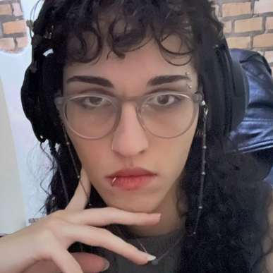

Alice Wolf Fernandes

Olá, meu nome é Alice Wolf Fernandes eu estou atualmente estagiando na área de tecnologia e estudo programação há algum tempo. Comecei há estudar FullStack no mês de dezembro de 2025 e meu desejo é ser uma programadora com domínio real em uma grande variedade de linguagens, tendo alguma linguagem de back-end como especialidade.
Linguagens que desejo aprender
- JavaScript (React e Typescript)
- Python
- Eu gostaria de informar outras mas ainda prefiro caminhar a pequenos passos para ter uma certeza maior do que vou querer. E como comecei recentemente com FullStack o JavaScript é minha prioridade maior no momento, acompanhado de Python por conta da necessidade de adicionar automações no meu trabalho.
Clique aqui para voltar para a página do index